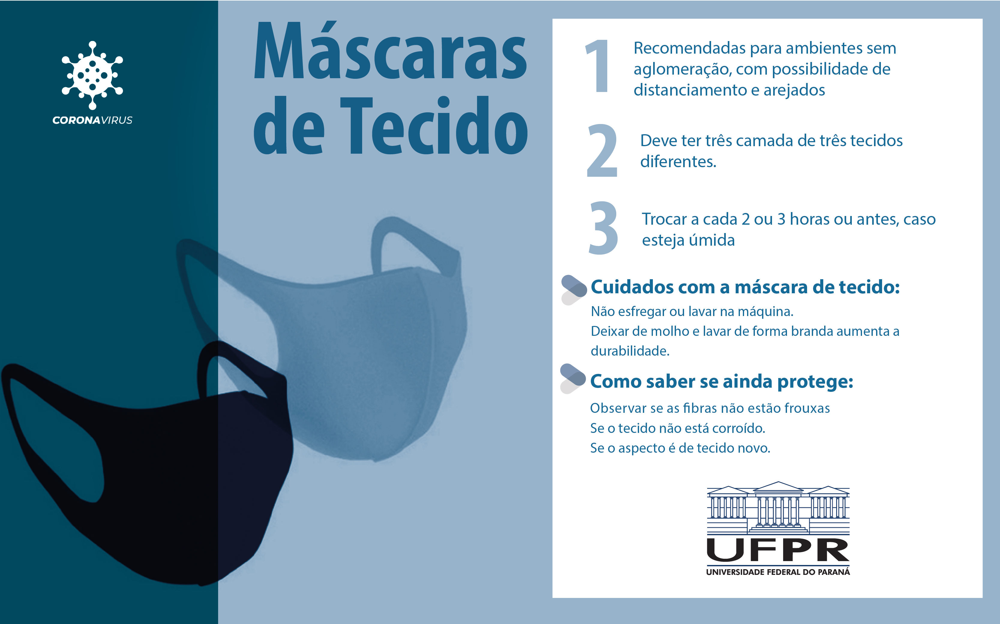
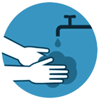
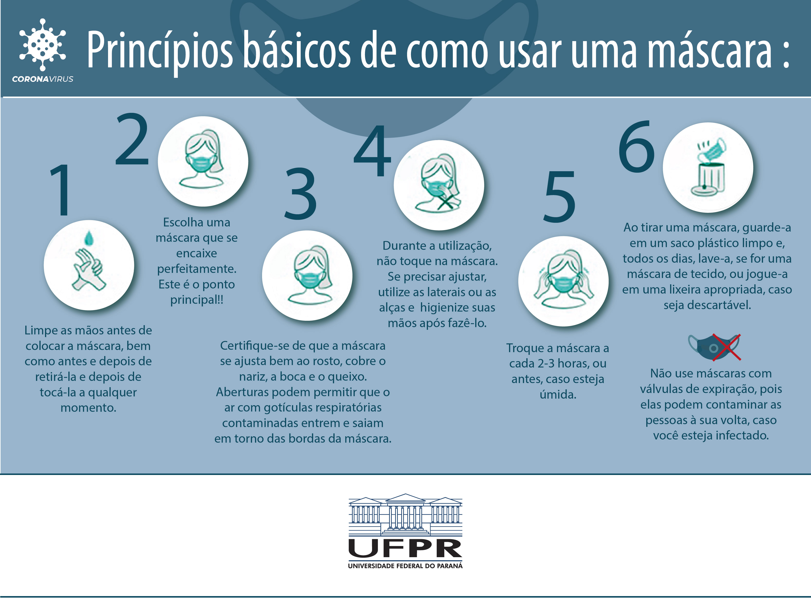
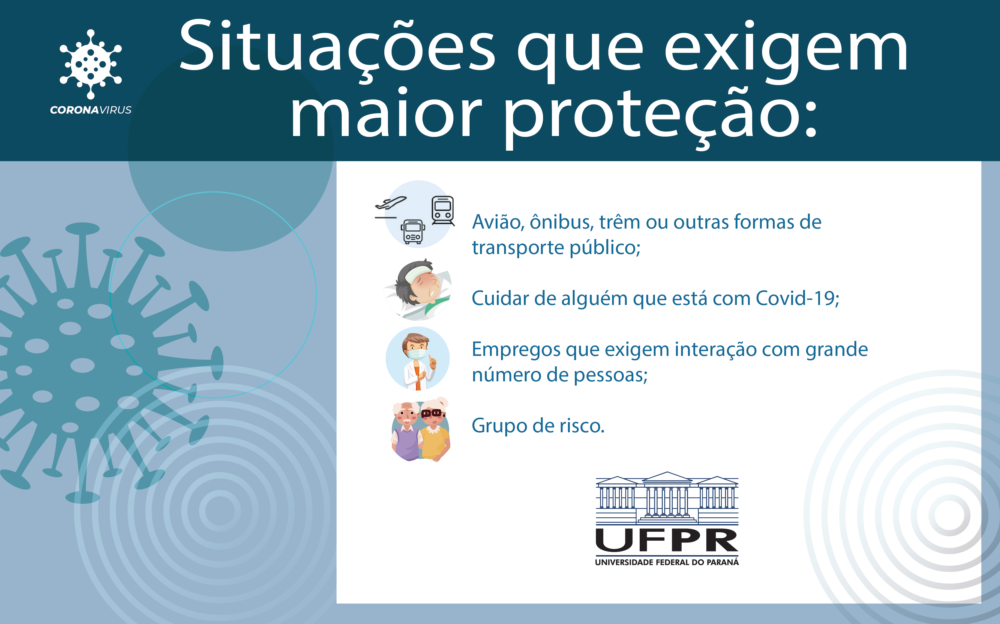
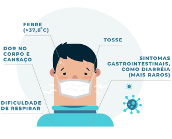

Módulo 1: Introdução ao novo coronavírus
COVID-19
Manejo da infecção causada pelo novo coronavírus
Aula 2
Transmissão, Sintomas, Diagnóstico e Prevenção
Essa é a Aula 2 do Módulo 1 do curso COVID-19 Fiocruz.
Nesta aula, vamos falar sobre as medidas de proteção e combate à COVID-19. As informações e orientações dessa aula sintetizam diretrizes já definidas pela Organização Mundial da Saúde (OMS) e pelo Ministério da Saúde no Brasil.
Ao final, você vai ser capaz de:
- Descrever o modo de transmissão da doença;
- Enumerar as medidas básicas de prevenção;
- Enumerar os sinais e sintomas mais conhecidos;
- Diferenciar diagnóstico clínico e laboratorial.
Lembramos que as orientações e procedimentos em relação ao coronavírus estão em constante mudança, à medida que aprendemos mais sobre a doença.
Para se manter atualizado, consulte sempre os links e os materiais de apoio indicados neste curso.
Transmissão
A maioria das pessoas se infecta com os coronavírus comuns ao longo da vida. Dentre elas, as crianças pequenas são as mais propensas a se infectar com o tipo mais comum do vírus.
O SARS-CoV-2 faz parte de uma família de vírus que causam infecções respiratórias e o novo agente do coronavírus provoca a doença chamada de COVID-19.
O coronavírus se dissemina rápido, o que pode significar muitos casos com hospitalização num curto espaço de tempo. Isso sobrecarrega o sistema de saúde e pode gerar grandes impactos sociais e econômicos. Por isso, é fundamental entender como o vírus é transmitido e prevenir que o mesmo se espalhe.
Tipos de transmissão
A transmissão do coronavírus ocorreu sob duas circunstâncias
| Transmissão local | Transmissão comunitária ou sustentada |
|---|---|
| São casos de pessoas que se infectaram e não estiveram em nenhum país com registro da doença, no entanto tiveram contato com outro paciente infectado que trouxe o vírus de fora do país (caso importado). | São casos em que não é possível identificar as fontes de transmissão da doença. Esse tipo de transmissão sugere circulação ativa do vírus na comunidade. |
Após mais de um ano do início da pandemia, novas formas do coronavírus têm chamado a atenção de cientistas do mundo todo. Isso porque estudos iniciais indicam que as cepas identificadas no Brasil e em países como Reino Unido, África do Sul e Índia podem ser mais transmissíveis e têm capacidade de driblarem o sistema imune e causar reinfecção. A lógica dos tipos de transmissão aplica-se também às novas variantes do coronavírus.
Para saber mais sobre as novas variantes do coronavírus, veja o vídeo produzido pela Fiocruz:
O coronavírus se dissemina rápido e apresenta alta taxa de hospitalização, com grandes impactos sociais e econômicos. Por isso, entender como ele é transmitido e prevenir que ele se espalhe é fundamental.
A transmissibilidade dos pacientes infectados por coronavírus é de, em média, sete dias após o início dos sintomas. No entanto, dados preliminares sugerem que a transmissão da COVID-19 pode ocorrer no período de incubação, ou seja, até mesmo antes do aparecimento de sinais e sintomas.
O período de incubação é o tempo entre a infecção da pessoa pelo vírus e o início dos sintomas da doença. De acordo com a Organização Mundial da Saúde (OMS), no caso do COVID-19 esse intervalo varia de 1 a 14 dias.
5 DIAS é o período médio de incubação da COVID-19
Essas estimativas estão sendo atualizados à medida que se tem mais dados sobre a doença.
A sobrecarga dos serviços de saúde, ocasionados pela COVID-19, é um problema e um risco de saúde pública. No vídeo, o Dr. Estevão Portela Nunes (INI-Fiocruz) explica esse fenômeno.
Como se dá a transmissão
A transmissão dos coronavírus se dá de pessoa para pessoa: pelo ar ou por contato pessoal com secreções contaminadas (gotículas de saliva, espirro, tosse, catarro).
O ciclo pode se iniciar com contato pessoal próximo (toque ou aperto de mão) ou contato com objetos ou superfícies contaminadas, seguido de contato com a boca, nariz ou olhos.
Confira no vídeo, como até mesmo ações simples podem transmitir o vírus.
Global COVID-19 Prevention
Fonte: Stanford Medicine.
Como você viu no vídeo, a transmissão rápida provocou, também, um certo pânico. E este é o momento que vivemos hoje.
Apesar disso, é possível reduzir a transmissão do coronavírus com as medidas de prevenção.
§ O CDC - Center for Disease Control and Prevention, agência norte-americana de controle e prevenção de doenças, classificou como baixa a probabilidade de pessoas se contaminarem com o novo coronavírus a partir da superfície de objetos, em publicação de abril de 2021. Neste mesmo documento, a agência reforçou que a exposição a gotículas respiratórias presentes no ar é a principal maneira pela qual as pessoas pegam a COVID-19. Entretanto, a desinfecção de superfícies com álcool gel é altamente recomendada para locais internos comunitários onde houve um caso confirmado ou suspeito de COVID-19 nas últimas 24 horas.
Medidas de prevenção

Lave as mão com frequência - use água e sabão ou álcool gel. Siga a sequência de lavagem, que deve durar pelo menos 20 segundos.
Evite tocar mucosas de olhos, nariz e boca. Cubra o nariz e a boca quando espirrar ou tossir - mas use o cotovelo.
Utilize lenço descartável para limpar o nariz - use uma vez e coloque no lixo.
Não compartilhe objetos de uso pessoal, como talheres, pratos, copos ou garrafas.
Mantenha os ambientes bem ventilados.
Evite aglomerações.
Uso de máscaras
O uso adequado das máscaras juntamente ao distanciamento físico é uma medida essencial no combate à pandemia já que a máscara atua como barreira física, impedindo que partículas aspiradas entrem diretamente em contato com o nariz e com a boca e que os aerossóis emitidos ao respirarmos, contaminem o ambiente.
A função, portanto, é dupla: as pessoas ficam menos expostas à contaminação do ambiente e oferecem menor risco de transmissão caso estejam infectadas.
Atualmente existem diversos tipos de máscaras disponíveis no mercado. O ponto principal é escolher uma máscara que se encaixe perfeitamente ao rosto. No entanto, existem diferenças quanto ao tipo de máscara e melhor recomendação de uso.

Princípios básicos de como usar uma máscara - Fonte: Universidade Federal do Paraná
No início da pandemia, ainda em 2020, a recomendação era que a população em geral fizesse uso apenas de máscaras de tecido e deixasse as industriais para os profissionais de saúde, pois havia o risco de que houvesse escassez do produto para o uso em hospitais, unidades de pronto atendimento e de atenção primária e especializada em saúde. Atualmente, entende-se que não há mais esse risco e a indústria tem produzido muito mais. Dessa forma, pessoas que não são profissionais de saúde também podem optar por um desses modelos para uma proteção mais eficaz.
As máscaras cirúrgicas são facilmente encontradas em farmácias e seguem as normas da Agência Nacional de Vigilância Sanitária (Anvisa) e da Associação Brasileira de Normas Técnicas (ABNT), com garantia de proteção. Em geral, elas possuem duas ou três camadas de diferentes tecidos de polipropileno (TNT), além de um clipe nasal que auxilia o ajuste no rosto. Para que o equipamento fique ainda mais aderido à face, há uma recomendação de se fazer um nó nas alças de orelha no local em que elas se juntam à borda da máscara.
Para os que apresentam maior exposição devem ser utilizadas máscaras com maior capacidade de proteção, como as do tipo PFF2 (equivalente a N95), vindo em seguida as máscaras cirúrgicas, TNT SMS, TNT simples e algodão multicamadas. A combinação de máscaras cirúrgicas com máscaras de pano multicamadas apresenta também uma maior capacidade de proteção. Saiba mais sobre as máscaras, na matéria do Boletim Observatório COVID-19.

Como testar se a máscara está protegendo bem? - Fonte: Universidade Federal do Paraná
É importante lembrar que as situações que exigem atenção redobrada e máxima proteção são: andar de avião, ônibus, trem ou qualquer outra forma de transporte público, se não houver como manter a distância mínima de um metro e meio das outras pessoas; cuidar de doentes com COVID-19; trabalhar em empregos que exigem interação com um grande número de pessoas; e integrantes do grupo de risco em qualquer circunstância.

Situações que exigem maior proteção - Fonte: Universidade Federal do Paraná
Abaixo estão as principais diferenças entre os diferentes tipos de máscaras e as recomendações de uso de cada tipo.
Fonte: Universidade Federal do Paraná
Muito se divulgou acerca de um possível tratamento farmacológico, composto por medicamentos indicados no manejo de doenças como malária e artrite reumática, que utilizado antes mesmo da infecção por COVID-19 ou ainda em seu início, impediria o contágio ou as formas graves da doença. No entanto, até o presente momento, em agosto de 2021, não houve comprovação de eficácia para quaisquer medicamentos nesse sentido. Não existe, portanto, tratamento precoce, nem tratamento preventivo. O que existe são medidas de prevenção como o uso da máscara e a vacinação, e o acompanhamento e atendimento imediato, que se dão o quanto antes ocorrer a suspeita para COVID-19. Além disso, o uso de medicamentos sem eficácia comprovada pela ciência pode causar eventos adversos e prejuízos para a saúde.
Atualmente já existem vacinas contra a COVID-19 disponíveis no Brasil e no mundo. As vacinas atuam na prevenção, induzindo a criação de anticorpos por parte do sistema imunológico. A vacinação é considerada a abordagem mais promissora para controlar a pandemia da doença causada pelo SARS-CoV-2. Para saber mais, acesse e se inscreva no curso Vacinação para COVID-19: protocolos e procedimentos técnicos desenvolvido pelo Campus Virtual Fiocruz – em parceria com o Núcleo de Educação em Saúde Coletiva (Nescon/UFMG) com o apoio do Programa Nacional de Imunização do Ministério da Saúde (PNI).
Além das medidas básicas, o Dr. Estevão Portela Nunes (INI-Fiocruz) ressalta outras ações que também são bastante importantes para a prevenção da doença.
Seguir todos os procedimentos para a prevenção nem sempre garante que a pessoa não desenvolva a COVID-19. Caso isso aconteça, é importante ficar atento aos sinais e sintomas que podem surgir.
Sinais e sintomas da COVID-19
Os sinais e sintomas da COVID-19 são principalmente respiratórios, semelhantes a um resfriado. Pode haver também infecção do trato respiratório inferior, como as pneumonias.

Principais sinais e sintomas da COVID-19 - Fonte: Freepik
Esses são os sinais e sintomas mais comuns. A infecção pelo SARS-CoV-2 pode variar de casos assintomáticos e manifestações clínicas leves, até quadros moderados, graves e críticos. Há ainda outros como conjuntivite, perda de paladar ou olfato, dor de cabeça etc. O novo coronavírus (SARS-CoV-2) encontra-se continuamente como objeto de estudos e investigações a fim de melhor caracterizar a infecção por ele causada.
A Dra. Marilia Santini (INI/Fiocruz) fala sobre a COVID-19
Ao apresentar esses sintomas, não significa que a pessoa tenha a COVID-19.
Os casos podem ser confirmados a partir de critérios clínicos, epidemiológicos, por meio de exames de imagem e/ou laboratoriais. Apesar da ampliação do acesso, a maior parte dos dados de testagem no Brasil, ainda hoje, refletem os casos mais graves de COVID-19, já que a política prioritária para confirmação da doença é a necessidade de internação ou gravidade do caso.
Um caso de Síndrome Gripal (SG) é definido como uma pessoa que apresente um quadro respiratório agudo com pelo menos dois dos seguintes sintomas: febre (mesmo que referida), tosse, dor de garganta, coriza, calafrios, distúrbios olfativos ou distúrbios gustativos (e especificidades para crianças, com obstrução nasal e idosos, como confusão mental). Na suspeita da covid-19, a febre pode estar ausente e sintomas gastrointestinais (diarreia) podem estar presentes.
Já para a Síndrome Respiratória Aguda Grave (SRAG), o Ministério da Saúde atualmente utiliza como critério para definição de SRAG que o indivíduo com sintomas de síndrome gripal apresente uma das seguintes manifestações: desconforto respiratório, pressão persistente no tórax, saturação de O2 menor que 95% ou coloração azulada dos lábios ou rosto.
Dessa forma, a avaliação diagnóstica pode seguir as diferentes vias:
Critério clínico: caso de Síndrome Gripal (SG) ou Síndrome Respiratória Aguda Grave (SRAG) associado a anosmia ou disgeusia aguda sem outra causa pregressa.
Critério clínico-epidemiológico: caso suspeito de SG ou SRAG com histórico de contato próximo ou domiciliar, nos últimos 14 dias anteriores ao aparecimento dos sinais e sintomas, com caso confirmado de COVID -19.
Critério clínico-imagem: caso de Síndrome Gripal ou Síndrome Respiratória Aguda Grave ou óbito por SRAG que não foi possível ser confirmado por critério laboratorial e que apresente alterações tomográficas indicativas de infecção por SARS-CoV-2. Critério laboratorial: (i)Resultado detectável para SARS-CoV-2 realizado pelo método RT-PCR, que detecta em amostra de secreções das vias aéreas (nariz e garganta) o vírus SARS-CoV-2, causador da COVID-19; (ii)Resultado reagente em teste de antígeno imunocromatográfico ou de imunofluorescência que detecta o vírus SARS-CoV-2; (iii)Resultado reagente em testes sorológicos (testes rápidos de anticorpos, eletroquimioluminescência, ensaio imunoenzimático, entre outros), que identificam anticorpos produzidos pelo organismo em resposta à infecção pelo SARS-CoV-2.
O diagnóstico laboratorial é indicado por um profissional de saúde, de acordo com os protocolos de tratamento das Síndromes Gripais.
Chegamos ao fim da aula
Você terminou a Aula 2 do Módulo 1 do curso COVID-19
Nessa aula, você viu como o coronavírus é transmitido, quais são as medidas de prevenção para conter a transmissão, quais são os sinais e sintomas da doença e como é feito o diagnóstico.
Ao ser diagnosticado como caso suspeito ou confirmado da COVID-19, é imprescindível seguir as orientações dos profissionais de saúde. Você vai conhecer essas orientações na próxima aula.